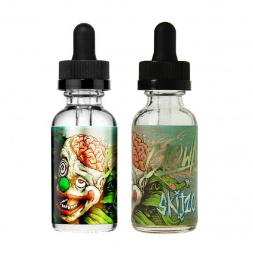

Clown Skitzo

Описание
- Объём: 30мл
- Крепость: 3мг
- PG/VG: 35/75
- Вкус: зелёное яблоко, карамель, сливки
- Стоимость: 700 Р
Карусель удовольствия, лучше которой нет на этом празднике. На первом круге, пока карусель набирает скорость, вас накроет сочным зелёным яблоком, которое поглотит своими кисло-сладкими нотами и создаст атмосферу веселья. На втором круге к яблоку присоединится задорная и сладкая карамель, заставляющая улыбаться. И на третьем круге, набрав полную скорость, карусель одарит нежным сливочным вкусом, завершающим прекрасную пирамиду вкуса.